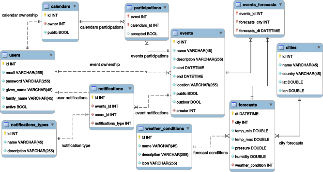

name: landing layout: true class: center, middle, light, landing --- #CalCARE ###Software Engineering 2 Course Project "Meteocal" <img src="img/polimi.png" alt="polimilogo" style="width: 20%;"> <br><br> ####February 26, 2015 ###Andrea Grazioso<br>Germano Gabbianelli<br>Fabrizio Ferrai <br> <button class="btn btn-primary btn-lg go-next">Signup »</button> --- name: sign layout: true .sign[***CalCARE***] .course-right[Andrea Grazioso, Germano Gabbianelli, Fabrizio Ferrai] --- name: light layout: true class: center, middle, light --- template: sign layout: true --- name:projdev .title[##Project Development: Timeline] -- .text[###***Nov 16, 2014*** - Requirements Analysis and Specification Document: use cases, functional and non-functional requirements] -- .text[###***Dec 7, 2014*** - Design Document: persistent data design, technologic choices, general architecture] -- .text[###***Jan 25, 2015*** - Implementation: code, Installation Manual, Testing Cases] -- .text[###***Feb 8, 2015*** - Acceptance Testing] -- .text[###***Feb 10, 2015*** - Project Reporting] --- name:numbers .title[##Some numbers first...] -- .text[###UFPs estimate: **117 UFP**] -- .text[###The finished project has **5031 SLOCs**] -- .text[####Java: 3865] -- .text[####Javascript: 675] -- .text[####HTML: 491] -- .text[###Using the CoCoMo II cost estimation model we get:] <iframe src="math.html" style="border: 0; width: 40em; position:relative; left: -2em;"></iframe> --- name:what .title[##What is CalCARE?] -- .text[###**CalCARE** is a new weather based online calendar] -- .text[###for helping people scheduling their personal events] -- .text[###avoiding bad weather conditions in case of outdoor activities.] --- template:light layout:false ##The Requirements --- name:implemented .title[##Required Features (1)] -- .text[###Functional requirements of the system were divided in 4 macro-areas:] <br> -- .text[###**Event Management**] -- .text[####add a new event] -- .text[####edit an existing event] -- .text[####delete an existing event] -- .text[####make an event «Public» or «Private»] -- .text[####specify details for an event: description, time, location] -- .text[####invite other users of the service to events] -- .text[####accept other users invitations for their own events] -- .text[####automatic enrichment with weather information for every creation or edit of an event, and every 12 hours] --- name:implemented2 .title[##Required Features (2)] -- .text[###**User profile management**] -- .text[####registration] -- .text[####login] -- .text[####logout] -- .text[###**Calendar Management**] -- .text[####modify privacy setting of the calendar (it can be public or private)] -- .text[####import calendar] -- .text[####export calendar] -- .text[###**Notifications Management**] -- .text[####automatic notification (with subsequent proposal for a new sunny day, if available) if an outdoor event turns to have bad weather three days before its happening] -- .text[####email notifications for bad weather] --- name:additional .title[##Additional Features we implemented] -- .text[###**Advanced User profile management**] -- .text[####password reset] -- .text[####email confirmation with token for the registration (more on this later)] -- .text[####modify personal data] -- .text[###**Modern UI: HTML5+CSS3**] -- .text[####Responsive] -- .text[####Mobile ready] -- .text[###**...Mobile Application!**] -- <img src="img/android.svg" alt="android" style="width: 13%; position:relative; left: 6em;"> <img src="img/apple.svg" alt="apple" style="width: 10%; position:relative; left: 6em;"> -- <img src="img/calcareapp.png" alt="app" style="width: 20%; position:absolute; bottom: 4em; right: 8em;"> --- name:assumptions .title[##Assumptions] -- .text[###We decided not to forbid overlaping events. However the UX clearly displays the number of events in each day.] -- .text[###We decided to consider as "bad weather" all the weather conditions different than Sunny or Cloudy.] -- .text[###Our current frontend implementation requires JavaScript to be enabled.] -- .text[###When an user A views the calendar C of an user B] -- + Public events are always visible + Private events: <div> <ul style="padding-left: 2em"> <li>fully visible if user A is also invited <li>partially visible if calendar C is public <li>not visible if calendar C is private </ul> </div> --- template:light layout:false ##The Design --- name:design1 .title[##Design: Data persistence] --  --- name:design2 .title[##Design: Architecture] -- .text[###We implemented a client-server RESTful architecture.] -- .text[###**Stateless:** The session state is held in the client (signed JWT)] -- .text[####Scalability] -- .text[###**Decoupled:** The frontend is totally decoupled from the backend (except for the data format)] -- .text[####Separation of Concerns] -- .text[####Modularity] -- .text[####Less code, so less bugs and less development time.] -- .text[####Super easy development of mobile application thanks to Apache Cordova.] --- name:design3 .title[##Design: UX] <img src="img/ux.svg" alt="ux" style="width: 115%; position:relative; left: -3em; top: 3em;"> --- template:light layout:false ##A closer look to The Code --- name:tools .title[##Technology: Tools] --- name:tiers .title[##Technology: Tiers Architecture] -- <img src="img/tiers.png" alt="tiers" style="width: 100%; position:relative; left: 1em;"> --- name:jwt .title[##Code Focus: JWT auth & Security] .text[###What's JWT?] -- .text[####JSON Web Token (JWT) is a compact URL-safe means of representing claims to be transferred between two parties. The claims in a JWT are encoded as a JSON object that is digitally signed using JSON Web Signature (JWS).] -- .text[####IETF DRAFT ( draft-ietf-oauth-json-web-token-32 )] -- .text[###Token based vs. Cookie based] <img src="img/cookie-token-auth.png" alt="cookie-token" style="width: 80%; position:relative; left: 4em;"> --- name:jwt2 .title[##Code Focus: JWT auth & Security] .text[###What are the benefits of using a token-based approach?] -- .text[####**CSRF**: no cookies, no forgery (impossible to generate a POST request and re-use the existing authentication cookie).] -- .text[####**Stateless (i.e. server side scalability)**: no need to keep a session store, as token is self-contanined] -- .text[####**Cross-domain / CORS**: can make AJAX calls to any server] -- .text[####**Decoupling**: not tied to a particular authentication scheme.] -- .text[####**Performance**: No need to interact with DB to authenticate and authorize an user.] -- .text[####**Mobile friendly**: on mobile cookies are not ideal when consuming a secure API (you have to deal with cookie containers] -- .text[####**Standard-based**: JWT is an IETF Standard draft and there are many implementations (Java, Javascript, Python, etc) and companies using it in production (e.g. Firebase, Google, Microsoft)] --- name:recovery .title[##Code Focus: Password reset with JWT] -- .text[###We implemented a *secure* password reset mechanism using JWT] -- .text[###How it works:] -- .text[####The user loses her password] -- .text[####The user fills the "Password Lost" form with her email] -- .text[####A JWT token is generated and signed by the server, and sent by email to the user] -- .text[####The user clicks on the Password Reset link] -- .text[####The server checks the validity of the JWT and the user is redirected to the "Password Reset" form.] -- .text[####<button class="btn btn-success btn-lg">Done!</button>] -- .text[####**(No DB involved)**] --- name:angular .title[##Code Focus: AngularJS] <div style="position:relative; top: -1em; left: 3em;">.title[###The Good, the Bad and the Ugly]</div> <img src="img/gbu.jpg" alt="gbu" style="width: 22%; position:absolute; right: 2em; top: .5em"> -- .text[###We loved AngularJS.] -- .text[####Coupled with REST APIs, it's a breeze to make wonderful SPApps] -- .text[####Easy to understand for a basic usage] -- .text[####Way less code! (than a JSF approach for example)] -- .text[###But it is not all a bed of roses.] -- .text[####Difficult to build such a complex application like Meteocal] -- .text[####Obscure bugs due to immaturity] -- .text[####Really hard debugging: useless tracebacks] --- template:light layout:false ##DEMO! --- template:light layout:false ##Acceptance Testing --- name:accscreen1 .title[##Acceptance Testing] <img src="img/calendarium_0.png" alt="calendarium" style="width: 100%; position:relative; left: 1em;"> --- name:accscreen2 .title[##Acceptance Testing] --- name:acceptance .title[##Acceptance Testing] .text[###We successfully deployed the others group application, following the Installation Manual] -- .text[###Then we applied the provided Test Cases document] -- .text[###<button class="btn btn-danger btn-lg">Failed</button>] -- .text[####**Calendar Export:** we deployed the application on Linux, while the developers only tested it on OS X and Windows.] -- .text[###<button class="btn btn-success btn-lg">Success!</button>] -- .text[####**Everything else.**] --- template:light layout:false ##Questions! <img src="img/questiontime.jpg" alt="qt" style="width: 90%; position:relative; top: -1em;"> --- template:light layout:false ##Thank you :)